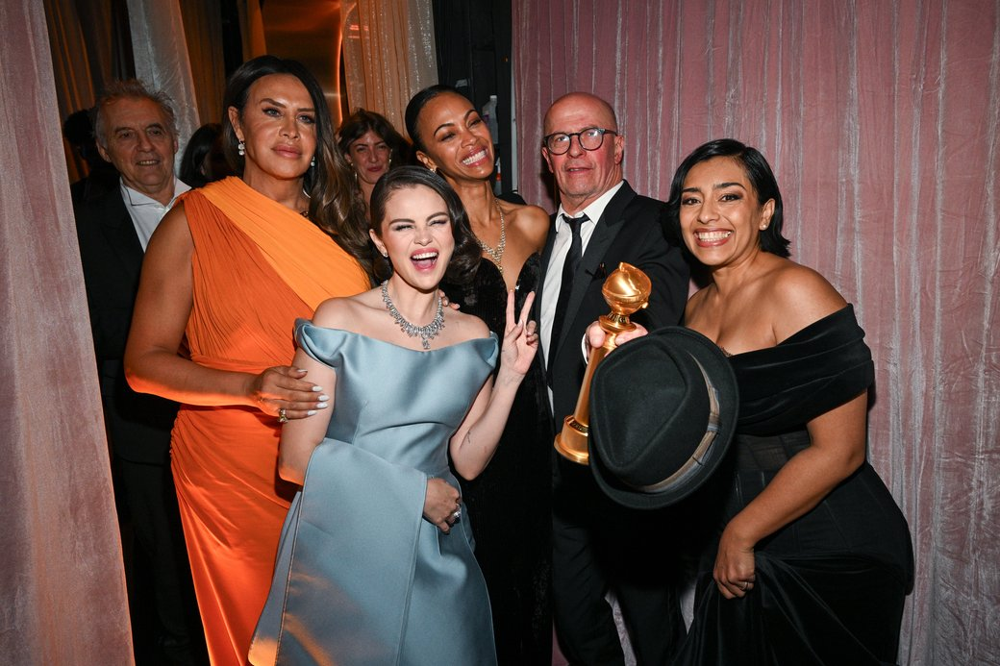

Дата 25 січня відома багатьма подіями та святами - дізнайтеся, як щасливо відзначити цей день. Завдання 3.
Сьогоднішня дата відома багатьма пам'ятними подіями та цікавими українськими народними звичаями. Дізнайтеся, яке свято 25 січня відзначається в Україні та у світі, хто зі знаменитостей народився і чого категорично не можна робити.
В лютому 2025 року на Місяці може зʼявитися перший дата-центр
Запуск місії, що передбачає доставку та встановлення дата-центру на Місяці, заплановано на лютий 2025 року. Місію виконуватиме компанія Intuitive Machines, а доставка здійснюватиметься за допомогою ракети SpaceX Falcon 9.

Оскар 2025: рекорди та несподіванки серед номінантів. Завдання 3.
Американська кіноакадемія оголосила номінантів на 97-му церемонію вручення премії "Оскар". Серед цьогорічних номінацій є перша номінація для відкритої трансгендерної акторки, рекорди для неангломовного фільму та несподіванки в акторських категоріях.